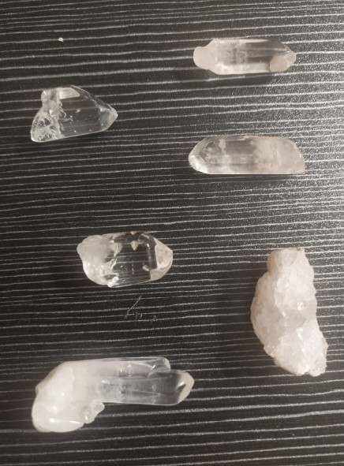
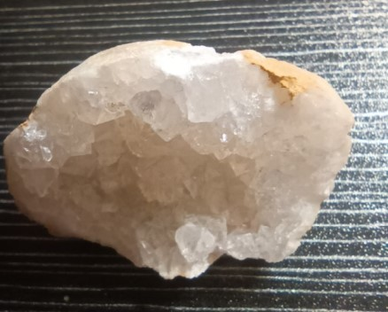

Il quarzo ialino – noto anche come cristallo di rocca – è la varietà più pura e trasparente del quarzo, con formula SiO₂ (biossido di silicio). Il termine “ialino” deriva dal greco hyalos (vetro), in riferimento alla sua limpidezza simile al vetro. La sua struttura cristallina esagonale (sistema trigonale) è priva di impurità visibili e inclusioni significative, donandogli una trasparenza ottica eccezionale.
Il quarzo ialino si forma in ambienti idrotermali, pegmatiti e in cavità di rocce magmatiche. I cristalli ben formati, spesso a doppia terminazione, sono molto ricercati sia in gemmologia che in ambito spirituale. È il “maestro amplificatore” per eccellenza: in elettronica e in orologeria viene utilizzato per la sua stabilità piezoelettrica, mentre nelle tradizioni olistiche rappresenta la luce cristallina che non conosce ombre.
Era considerato fin dall’antichità una pietra sacra. Per i Greci era il ghiaccio eterno, solidificato dagli dèi, un cristallo puro, capace di riflettere e contenere la luce. Secondo il mito, il cristallo di rocca si sarebbe formato quando l’acqua gelò così profondamente da non potersi più sciogliere, donando all’uomo un frammento di divina trasparenza.
In cristalloterapia, il quarzo ialino è un amplificatore energetico che potenzia le qualità delle altre pietre. È un cristallo che fa luce su ciò che è confuso, portando ordine e lucidità. Grazie alla sua purezza, viene spesso utilizzato come “programmatore” e purificatore di altri cristalli.
Posizionato sul settimo chakra (Sahasrara), favorisce la connessione spirituale, sostiene la meditazione, porta chiarezza e apertura mentale e armonizza l’energia complessiva.

Il quarzo ialino è considerato il “cristallo maestro”, capace di potenziare l’energia di qualsiasi altra pietra e di amplificare le intenzioni di chi lo utilizza. La sua limpidezza simboleggia la mente libera da pregiudizi, pronta ad accogliere la verità e la trasparenza interiore. In molte tradizioni, viene impiegato per purificare gli ambienti, pulire i campi energetici e favorire la meditazione profonda.
Tenere un quarzo ialino sul comodino o vicino al letto si ritiene favorisca la purificazione e la quiete, allontanando le energie stagnanti e promuovendo un sonno ristoratore e sogni chiari. Nelle pratiche di guarigione, viene spesso posizionato al centro della stanza o utilizzato per creare griglie cristalline di protezione e armonia.
- Amplifica energia e intenzioni
- Porta chiarezza e ordine mentale
- Favorisce purificazione e quiete
- Connette con la dimensione spirituale
- Sul comodino per purificare l’ambiente
- Sul settimo chakra in meditazione
- Come amplificatore di altre pietre
- In acqua carica (elixir di cristallo)
“Era considerato fin dall’antichità una pietra sacra. Per i Greci era il ghiaccio eterno, solidificato dagli dèi, un cristallo puro, capace di riflettere e contenere la luce.
In cristalloterapia, il quarzo ialino è un amplificatore energetico che potenzia le qualità delle altre pietre. È un cristallo che fa luce su ciò che è confuso, portando ordine e lucidità.
Tenere un quarzo ialino sul comodino o vicino al letto si ritiene favorisca la purificazione e la quiete.
Posizionato sul settimo chakra (Sahasrara), favorisce la connessione spirituale, sostiene la meditazione, porta chiarezza e apertura mentale e armonizza l’energia complessiva.”

Purezza e cura
Il quarzo ialino è molto resistente. Puoi pulirlo con acqua tiepida e sapone neutro. Ricaricalo alla luce solare del mattino o al chiaro di luna. Non teme l’acqua né la maggior parte degli agenti atmosferici. È eccellente per purificare altre pietre.
Giacimenti e varietà
I cristalli di rocca più pregiati provengono da Brasile, Madagascar, Svizzera (Alpi), Arkansas (USA) e Himalaya. Esistono varietà particolari come il quarzo “laser” (a punta lunga), i “cristalli fantasma” e il quarzo “a doppia terminazione”.
Scienza e simbolo
La gemmologia conferma la purezza del quarzo ialino e le sue proprietà piezoelettriche. La tradizione lo vede come un ponte tra cielo e terra, un cristallo di luce assoluta. Unisce perfettamente la fisica quantistica con l’antica sapienza.